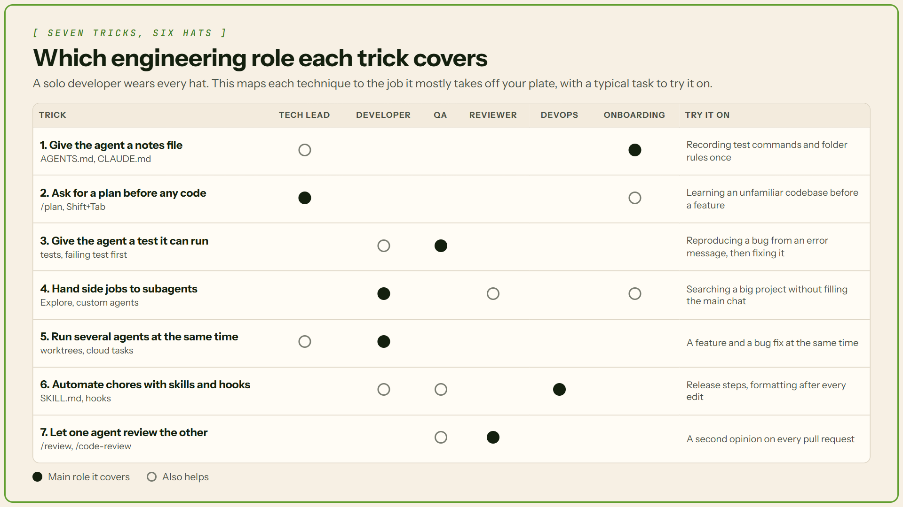

7 Codex & Claude Tricks That Turn You Into a One-Person Engineering Team
Seven documented Codex and Claude Code features that help one developer plan, build, test and review like a small team.
🧑💻 The problem with building alone
When you build software alone, you do every job yourself. You plan, write the code, test it and review it. Nobody checks your work. And when you open an old project, you can lose hours just working out how it fits together.
An AI coding agent can take some of that load. It's an AI that works inside your project: it reads your files, changes code and runs commands, such as your tests. You tell it what you want in plain English.
This article covers the two best-known agents, Codex from OpenAI and Claude Code from Anthropic, with seven tricks and six smaller tips. Every feature comes from the official docs.
- Give the agent a short notes file about your project.
- Ask for a plan before any code, and tests that prove the work is done.
- Let several agents work at once, each in its own copy of your code.
- Have one agent review the other. You still make the final call.
📖 Words you'll see in this article
| Term | What it means |
|---|---|
| Terminal | The text window where you type commands. A CLI is a tool you use there. |
| IDE | The app you write code in, such as VS Code. |
| Branch | A separate line of work in Git, the tool that tracks code changes. |
| Pull request (PR) | A request to add a branch's changes to the main code, so they can be reviewed first. |
| Tokens | Small chunks of text an AI reads and writes. The more tokens a task uses, the more of your plan's usage it takes. |
| CI | Tools that run checks automatically every time code changes. |
⚖️ Codex and Claude Code side by side
- Codex (OpenAI) runs in the terminal, your IDE, the ChatGPT desktop app and Codex Cloud. It's included in every ChatGPT plan, even Free. The old Codex app moved into the ChatGPT desktop app in July 2026.
- Claude Code (Anthropic) runs in the terminal, your IDE, a desktop app and the browser. It needs a paid Claude plan (Pro, Max, Team or Enterprise) or an API key.
Most features exist in both, under different names. Figure 1 lines them up.
![Comparison table of OpenAI Codex and Anthropic Claude Code. Codex: included in every ChatGPT plan, AGENTS.md with a 32 KiB default cap, /plan, subagents on by default, skills in .agents/skills called with $name, hooks.json trusted via /hooks, worktrees and cloud tasks with up to 4 attempts, /review and @codex review, codex exec. Claude Code: Pro, Max, Team, Enterprise or API key, CLAUDE.md or AGENTS.md, Shift+Tab or /plan, built-in Explore and Plan subagents, skills in .claude/skills called with /name, hooks in settings.json, claude --worktree and claude --cloud, /code-review and /security-review, claude -p.](https://padmashri23.github.io/under-the-hood/codex-claude-one-person-engineering-team/images/codex-vs-claude-code.png)
- Already use ChatGPT, even the free plan? Start with Codex.
- Already pay for a Claude plan? Start with Claude Code.
- All seven tricks work in either tool. You don't need both to begin.
🛠️ Seven tricks, one at a time
Each trick explains the idea first, then shows how to do it in each tool.
1. Give the agent a notes file
Both tools read a notes file from your project at the start of every session. Think of it as onboarding docs for the AI: how to run the tests, and what not to touch.
- Codex reads
AGENTS.md. If you have several, Codex combines them, and the one closest to the folder you're working in takes priority. - Claude Code reads
CLAUDE.md. Version 2.1.277 and later also readAGENTS.md, but by default only if there's no CLAUDE.md or CLAUDE.local.md. Runclaude --versionto check yours. To share one file, write@AGENTS.mdinside CLAUDE.md. - Both have an
/initcommand that writes a first draft.
Start with the command that runs your tests. Anthropic calls it "the single most useful line" in the file.
## Commands
- Run tests: npm test
## Rules
- Never edit files in /migrations by hand.2. Ask for a plan before any code
In plan mode, the agent researches your code and writes a plan for you to approve. In Claude Code, it can't edit your files until you approve the plan. You fix the plan first, then let it start. Fixing a plan takes a minute; undoing wrong changes takes much longer.
- Claude Code: press
Shift+Tabuntil the status bar shows plan mode, or start your message with/plan. Claude will "research and propose changes without making them." - Codex: type
/planand your request.
It's also the easiest way into a project you didn't write. The agent reads all the code; you read a short summary.
Try this/plan Explain how an order moves from the cart to payment. Then propose how to add discount codes, and list the files you'd change.
3. Give the agent a test it can run
An agent can't tell whether its work is right unless it can check. Tests give it that check, because they pass or fail. Anthropic's advice: "Give Claude something it can run that comes back pass or fail."
For bugs, ask for the test first. A test that fails before the fix and passes after it proves the bug is gone.
Try thisCheckout shows a 500 error when the cart is empty. Error message: [paste]. Write a failing test that shows the bug, fix it, then run all the tests.
4. Hand side jobs to subagents
In a long session, the AI has more to keep in mind and can forget early details. A subagent is a helper the main agent sends off to do one focused job, like searching the code. It works separately and reports back only its answer.
- Claude Code: each subagent "runs in its own context window," its own separate memory. A built-in one, Explore, searches code without changing it. Add your own in
.claude/agents/. - Codex: subagents are on by default. Add your own in
.codex/agents/.
Good to know: OpenAI says subagents "consume more tokens than comparable single-agent runs," so they use up your limits faster.
5. Run several agents at the same time
Two agents in the same folder can overwrite each other's changes. The fix is a Git worktree: a second copy of your project on its own branch.
- Claude Code:
claude --worktree feature-authstarts a session in its own worktree. - Codex: worktrees "let Codex run multiple independent chats in the same project without interfering with each other."
You can also send work to the cloud, so it runs on the provider's computers instead of your laptop:
- Claude Code:
claude --cloud "Fix the flaky date test"starts a cloud session. A flaky test is one that sometimes passes and sometimes fails. - Codex: a Codex Cloud task "can keep working while your computer is asleep." The experimental
--attemptsoption runs up to four separate attempts at the same task, so you can keep the best result.
Your job becomes writing clear tasks and checking results (Figure 3). Before letting agents run alone, read our guide to AI agent guardrails.

6. Automate chores with skills and hooks
A skill is a saved set of instructions for a job you repeat, like "prepare a release." It's a folder with a SKILL.md file inside.
- Claude Code: keep skills in
.claude/skills/and run one with/plus its name. - Codex: keep skills in
.agents/skills/and call one with$plus its name.$skill-creatorhelps you write one.
A skill only needs a name, a description that says when to use it, and the steps. This one works in either tool, saved as release-notes/SKILL.md in the folder above:
---
name: release-notes
description: Writes release notes from the commits since the last tag. Use when preparing a release.
---
1. List the commits since the last Git tag.
2. Group them into Features, Fixes and Other.
3. Add the notes to the top of CHANGELOG.md.An agent can still skip a skill's advice. A hook can't be skipped: it's a small script that runs automatically at a set moment, every time. Anthropic says hooks make "certain actions always happen rather than relying on the LLM to choose to run them." For example, a hook can run your code formatter after every edit, or block edits to .env, the file that usually holds passwords.
Here's Anthropic's documented formatter hook. It goes in .claude/settings.json and needs jq and Prettier installed:
{
"hooks": {
"PostToolUse": [
{
"matcher": "Edit|Write",
"hooks": [
{
"type": "command",
"command": "jq -r '.tool_input.file_path' | xargs npx prettier --write"
}
]
}
]
}
}Claude Code keeps hooks in its settings file. Codex has hooks too, in hooks.json, and asks you to trust each one before it runs. Both agents also run inside scripts and CI, without a chat window, using codex exec or claude -p.
7. Let one agent review the other
Mistakes are hard to spot in your own code, because you know what you meant. So ask the agent that didn't write a change to review it.
- Codex: type
/reviewto check your changes, or comment@codex reviewon a GitHub pull request. There, Codex "flags only P0 and P1 issues," the most serious ones. - Claude Code: type
/code-reviewto check your changes, or/security-reviewto look for security holes. Team and Enterprise plans can also turn on Code Review for GitHub pull requests.
Good to know: Anthropic's Code Review "never approves or blocks the pull request." The agents point out problems; you decide what gets merged.

📅 Putting it together: one day, two agents
Here's how the tricks fit together on a normal working day. It's an example, not a recorded session.
- Tech lead. You open Claude Code in plan mode and ask how sign-up works today, then for a plan to add Google login. You fix one step and approve the plan.
- Developer. Claude Code builds the feature in its own worktree. Meanwhile, a Codex Cloud task fixes the flaky test you've been ignoring for weeks.
- QA. Both agents run the test suite before saying they're done, and a hook formats every file Claude Code touched.
- Reviewer. You comment
@codex reviewon Claude's pull request and run/code-reviewon Codex's. - Decision maker. You read both reviews and the changes, ask for one fix, and merge.
That's four roles covered in one day, and you still made every decision.
⚡ Six more tips worth knowing
- Undo a bad edit. In Claude Code, press
Esctwice with an empty prompt box, or type/rewindto go back to an earlier point. It can't undo files changed only by terminal commands, so keep saving your work in Git. - Keep the notes file short. Anthropic suggests under 200 lines per CLAUDE.md, because longer files "consume more context and reduce adherence." In other words, the agent follows them less closely.
- Connect your other tools. MCP (Model Context Protocol) is a standard way to plug tools like Notion into an agent. Add one with
codex mcp addorclaude mcp add. - Start work from an issue. In the Linear task tracker, you can assign an issue to Codex on paid plans. On GitHub, run
/install-github-apponce, then mention@claudein an issue or pull request. - Bring cloud work home.
claude --teleportpulls a Claude Code cloud session into your terminal to finish locally. - Put chores on a schedule. In the ChatGPT desktop app, scheduled tasks run Codex jobs on a timetable, like a weekly check for outdated packages. The Codex CLI can't manage them.
🔒 Stay safe while agents work
An agent runs real commands on your computer. So decide how much it may do without asking you first.
- Codex: choose a mode with
/permissions. OpenAI's advice is simple: "For most work, start with Ask for approval." OpenAI describes its Full access mode as "Unrestricted access to the internet and any file on your computer," so keep it for throwaway setups. Network access is off by default. - Claude Code: new terminal sessions start in auto mode, which acts without asking but runs safety checks in the background. If you want Claude to ask before every edit or command, press
Shift+Tabto switch to Manual mode. The mode that skips every check,bypassPermissions, is meant for "isolated containers and VMs only."
⚠️ Common beginner mistakes
- Vague tasks. "Fix the app" gives the agent nothing to check. Say what's wrong, where, and how to test the fix.
- Merging without reading. Agents make mistakes. Read every change before it goes in, even after an agent review.
- One endless session. Start fresh for each new task. In Claude Code, Anthropic suggests
/clearbetween unrelated tasks.
🚀 Where to start
- Run
/initto create a notes file, and add your test command. - Use plan mode for your next feature, and fix the plan before you say yes.
- For every bug, ask for a failing test first.
- Run one task in a worktree or the cloud, and have the other agent review it before you merge.
📋 Cheat sheet
The main commands from this article in one place.
| Job | Codex | Claude Code |
|---|---|---|
| Create a notes file | /init (writes AGENTS.md) | /init (writes CLAUDE.md) |
| Plan first | /plan | Shift+Tab until plan mode shows, or /plan |
| Work in parallel | Worktrees | claude --worktree <name> |
| Send a task to the cloud | codex cloud exec --env <id> "<task>" | claude --cloud "<task>" |
| Use a skill | $skill-name | /skill-name |
| Review changes | /review, @codex review | /code-review, /security-review |
| Run in scripts and CI | codex exec | claude -p |
| Connect a tool | codex mcp add | claude mcp add |
| Set permissions | /permissions | Shift+Tab (modes), /permissions (rules) |
| Undo an edit | Use Git | Esc twice or /rewind |
And the three prompts to copy:
/plan Explain how an order moves from the cart to payment. Then propose how to add discount codes, and list the files you'd change.
Checkout shows a 500 error when the cart is empty. Error message: [paste]. Write a failing test that shows the bug, fix it, then run all the tests.
Use a subagent to find every place this app sends an email, and list the files.✅ Conclusion
These tools don't replace a team's judgment. What changes is where your time goes: less typing, more planning and checking.
Use Codex for clear jobs you can hand to the cloud, and Claude Code for work you want to guide closely on your own machine. Then let each review the other. That gives a solo developer what's usually missing: a second pair of eyes on every change.